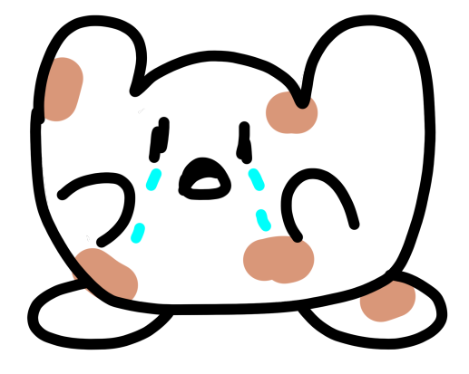

Este es el arte que sirvio como base para los personajes de los juegos.
Legend/Juan
Un poyo traumado o poyo uh
Axelo/Diente bugeado
Endbydia
Alex RS
Un Axelo/diente bug sucio

Nyusatsu
Nyusatsu Pixel hecho por Eikki Yazid
Endbydia pixel/ Endbydia Gameboy
Axelo Pixel/ Diente pixel/ Axelo/Diente Gameboy
Marde/Zanahoria Pixel/Gameboy
Daisy Pixel/Gameboy
Cubo Pixel/Gameboy
Concepto del ataque de nyusatsu para Endbydia Gameboy hecho tambien por Eikki Yazid
Concepto de ataque de Doggy para Endbydia Gameboy hecho por... Doggy